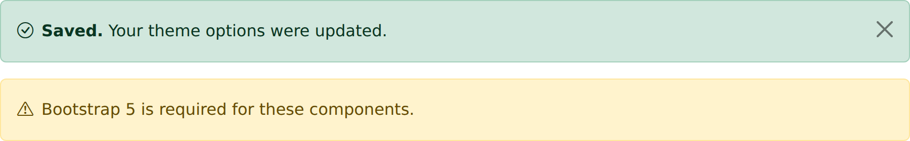
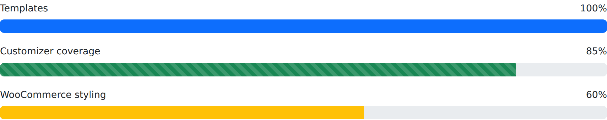
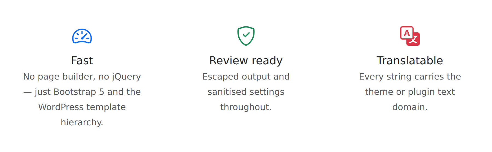

What's in the repository
Four separate WordPress packages live side by side. The theme stands on its own; everything else is optional.
wpwisebones
The parent theme. Full template hierarchy, Customizer panel, admin options page, three widgets,
nine widget areas, theme.json, SEO meta and a WooCommerce layer.
wisebones-shortcodes
17 Bootstrap components as shortcodes (20 tags in total). Works with any Bootstrap 5 theme, and loads its own bundled Bootstrap when the active theme doesn't provide one.
realwise
A navy/amber real-estate brand skin with a conversion-focused front page and a demo importer that builds the whole marketing site, plus an Easy Digital Downloads storefront.
aec-forge
A charcoal/molten-orange marketplace skin for AEC, BIM and Excel specialists, with a one-click site builder under Appearance → AEC Forge Setup.
What it looks like
Every screenshot on this site is rendered from the actual templates and shortcode callbacks in this repository — see how the screenshots are generated.

Quick start
Both zips are built and committed at the repository root, so you can install them straight from the WordPress admin without a build step.
1. Install the theme
Appearance → Themes → Add New → Upload Theme → choose wpwisebones.zip → Activate.
2. Add the shortcodes plugin
Plugins → Add New → Upload Plugin → choose wisebones-shortcodes.zip → Activate. The theme's
dashboard panel shows whether the companion plugin is active and links to it when it isn't.
3. Set up the front page
Appearance → Customize → WPWiseBones → Hero / Banner sets the heading, sub-heading and button; Brand Colours and the hero update live in the preview. Appearance → Theme Options carries the on/off switches (breadcrumbs, reading time, related posts, performance toggles).
npm install && npm run preflight && npm run zip
inside wpwisebones/ rebuilds the theme zip. See Develop.
Feature tour
Full template hierarchy
index, home, singular, single, page, archive, category, tag, author, date, taxonomy, attachment, search, 404, comments — plus three page templates.
Customizer
One panel, seven sections, 25 settings. Colours, hero and base font size update over postMessage; the rest use selective refresh.
Theme options page
14 general options and 5 performance toggles under Appearance → Theme Options, including custom CSS and head/footer JS fields.
Widgets
Recent Posts with thumbnails, Social Links and a CTA Banner, across nine registered widget areas.
Block editor
theme.json palette, font sizes and layout widths, plus registered block styles and patterns.
SEO built in
Open Graph, Twitter Card and Schema.org JSON-LD, which step aside automatically when Yoast, Rank Math or AIOSEO is active.
WooCommerce
Bootstrap wrapper markup, a dedicated shop sidebar and restyled store notices.
Local assets only
Bootstrap 5.3.3 and Bootstrap Icons 1.11.3 ship in assets/vendor/ — no third-party CDN request at runtime.
Translation ready
Every string carries the theme or plugin text domain, and languages/wpwisebones.pot is committed.
Components you can drop into content
The companion plugin turns the Bootstrap component set into shortcodes you can type into any post, page or widget. Here are three of the seventeen.



See all 17 shortcodes, with attributes and rendered output →
Two child themes, ready to activate


Compatibility and licence
| Package | Version | Requires WP | Requires PHP | Tested to | Licence |
|---|---|---|---|---|---|
| WPWiseBones (theme) | 1.0.13 | 6.0 | 7.4 | 7.0 | GPL-2.0-or-later |
| WiseBones Shortcodes (plugin) | 1.0.7 | 6.0 | 7.4 | 7.0 | GPL-2.0-or-later |
| RealWise (child theme) | 1.3.4 | 6.0 | 7.4 | — | GPL-2.0-or-later |
| AEC Forge (child theme) | 1.1.2 | 6.0 | 7.4 | — | GPL-2.0-or-later |
Bootstrap and Bootstrap Icons are bundled under the MIT licence; everything in this repository is GPL-2.0-or-later. Copyright © 2025 WPWiseBones / WPRealWise.